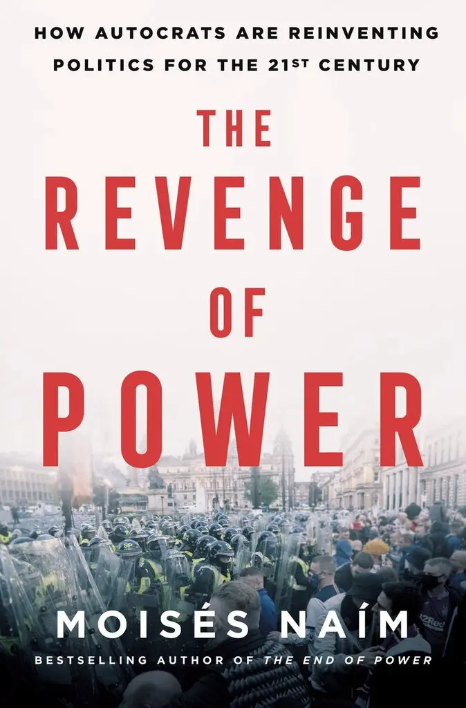

The Revenge of Power: How Autocrats Are Reinventing Politics for the 21st Century
by: Moisés Naím
Throughout history, mis- and disinformation have always been the tools of autocrats and dictators. What’s new
in the 21st century, writes Naím, a political scientist, is the culture of “post-truth.” Post-truth is not untruth
or lies — it is the idea that there is no truth, that there is no such thing as objectivity or even empirical reality.
This was beautifully described by Hannah Arendt in “The Origins of Totalitarianism” — that people “believe everything and
nothing, think that everything was possible and nothing was true.” Arendt published those words in 1951, but as Naím writes,
the modern combination of technical empowerment and economic disempowerment has resulted in a frontal attack on a shared sense of reality.